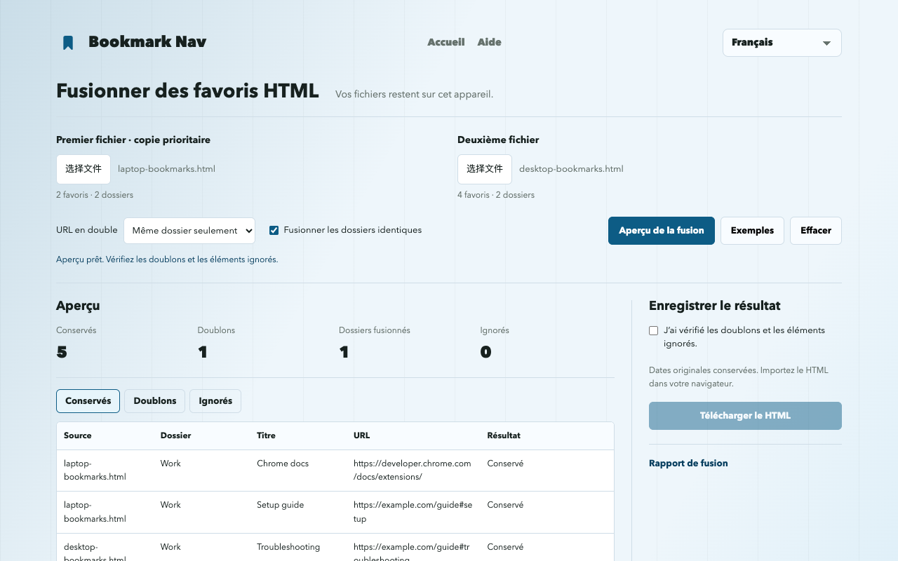

Comment fusionner des favoris Chrome en HTML
Choisissez deux exports HTML de Chrome, vérifiez les doublons, téléchargez le fichier combiné et importez-le dans Chrome. Il s’agit de fichiers exportés, pas de fusion de comptes ou de synchronisation.
Fusionner des fichiers de favorisExporter, fusionner et importer
- Ouvrez chrome://bookmarks et exportez depuis le menu du gestionnaire. Conservez le HTML original comme sauvegarde et exportez aussi la deuxième collection.
- Choisissez les deux fichiers dans l’outil web. Le premier est prioritaire lors de la suppression d’un doublon.
- Commencez par les doublons du même dossier. Vérifiez les éléments conservés, supprimés et ignorés avant de modifier les règles.
- Confirmez l’aperçu et téléchargez le HTML. Le site ne modifie pas les favoris du navigateur.
- Importez le HTML depuis le menu du gestionnaire Chrome. Testez d’abord dans un profil vide pour éviter les copies supplémentaires dans votre collection principale.
Un exemple reproductible de six liens
Les exemples contiennent six liens. L’aperçu par défaut en conserve cinq et supprime un doublon du même dossier. La même URL dans Learning et Work reste dans les deux dossiers ; #setup et #troubleshooting restent distincts.

Que conserve-t-on ou ignore-t-on ?
Le premier fichier est prioritaire lors de la suppression d’un doublon. Les URL sont comparées exactement ; paramètres, #fragments, protocoles et www restent distincts. Les mêmes URL dans des dossiers différents sont conservées par défaut.
Les dossiers ne fusionnent que si leur nom et chemin parent correspondent. Sans fusion, chaque source a son dossier ; les noms identiques au même niveau reçoivent un suffixe et les marqueurs de barre sont retirés.
Le téléchargement inclut toute la hiérarchie, les URL prises en charge, les titres et les valeurs ADD_DATE / LAST_MODIFIED disponibles. Icônes, descriptions, étiquettes et données de synchronisation sont exclues. Les URL absentes ou non prises en charge, dont javascript: et data:, sont signalées comme ignorées. La disponibilité des liens n’est pas vérifiée.
Sauvegardes et limites d’importation
Conservez les deux exports originaux et sauvegardez le navigateur cible. L’import ajoute des favoris ; le répéter peut ajouter des copies. Le HTML ne remplace pas automatiquement votre collection.
HTML de favoris Netscape en UTF-8. Par fichier : jusqu’à 10 MiB, 25,000 favoris/dossiers et 64 niveaux, hors liste externe. JSON et plist ne sont pas pris en charge.
Le résultat peut dépasser les limites d’entrée et ne plus être lisible par cet outil. Les dossiers séparés ajoutent un niveau. Gardez vos exports originaux.
Chrome ignore les dossiers vides et réinitialise leurs dates. Les titres, URL et dates d’ajout des favoris sont conservés. Les marqueurs de barre peuvent correspondre à la barre de favoris du navigateur.
Outil web et import dans l’extension
Le site fonctionne sans extension et télécharge seulement du HTML. Ajout direct, sauvegarde et annulation vérifiée sont préparés pour l’extension 1.3.1 ; ne supposez pas qu’ils figurent déjà dans la version publique. Vérifiez la version installée et le menu d’import. L’ajout direct crée un dossier séparé et utilise les dates actuelles, pas celles du HTML.
Installer Bookmark NavQuestions fréquentes
Les fichiers sont-ils envoyés ?
Les fichiers sont traités dans la mémoire de cet onglet, sans envoi ni analyse. Actualiser ou quitter efface les fichiers chargés. Les téléchargements restent sur votre appareil.
Cela fusionne-t-il les comptes Chrome ou leur synchronisation ?
Non. Deux exports HTML sont fusionnés localement. Chrome synchronise toujours selon les réglages du navigateur.
Les dates et dossiers vides sont-ils conservés ?
Dates originales conservées. Importez le HTML dans votre navigateur.
Chrome ignore les dossiers vides et réinitialise leurs dates. Les titres, URL et dates d’ajout des favoris sont conservés. Les marqueurs de barre peuvent correspondre à la barre de favoris du navigateur.